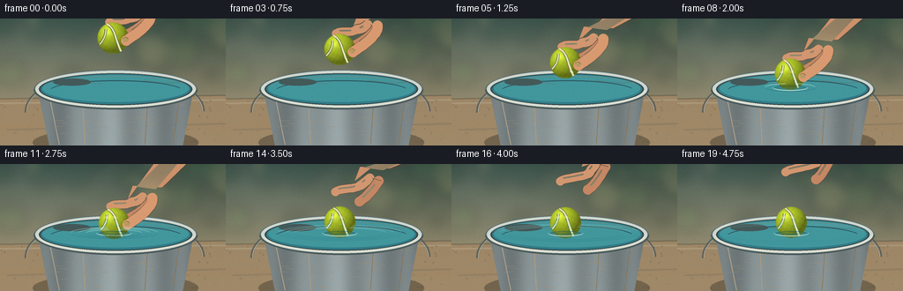
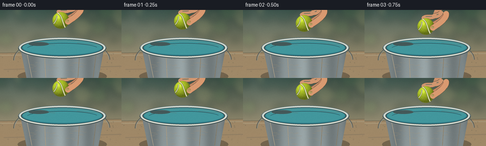

CODING AGENTS AS PIXEL WORLD MODELS
traex/GPT-5.6-Sol · phygen_008
点击播放 · 原生 RGB 像素
逐轮保存的候选
回放视频、检查图与代码变化。
每份候选均可单独播放。实际图片检查记录在下方工具轨迹中。
候选 01播放与检查图
点击播放 · 原生 RGB 像素


展开代码变化
--- 上一保存版本
+++ 本次保存版本
@@ -0,0 +1,293 @@
+from pathlib import Path
+import math
+import numpy as np
+from PIL import Image, ImageDraw, ImageFilter
+import artifact_io
+
+W,H,N = 256,144,20
+S=4
+WS,HS=W*S,H*S
+rng=np.random.default_rng(8008)
+
+def sc(v): return int(round(v*S))
+def box(b): return tuple(sc(x) for x in b)
+def pts(p): return [(sc(x),sc(y)) for x,y in p]
+def smoothstep(x):
+ x=max(0,min(1,x)); return x*x*(3-2*x)
+
+def line(draw, xy, fill, width=1): draw.line(pts(xy), fill=fill, width=max(1,sc(width)), joint='curve')
+def ellipse(draw,b,fill=None,outline=None,width=1): draw.ellipse(box(b),fill=fill,outline=outline,width=max(1,sc(width)))
+def polygon(draw,p,fill): draw.polygon(pts(p),fill=fill)
+def arc(draw,b,a0,a1,fill,width=1): draw.arc(box(b),a0,a1,fill=fill,width=max(1,sc(width)))
+
+def bezier(p0,p1,p2,p3,n=30):
+ out=[]
+ for t in np.linspace(0,1,n):
+ u=1-t
+ out.append((u**3*p0[0]+3*u*u*t*p1[0]+3*u*t*t*p2[0]+t**3*p3[0],
+ u**3*p0[1]+3*u*u*t*p1[1]+3*u*t*t*p2[1]+t**3*p3[1]))
+ return out
+
+# static background, softly focused to emphasize the action
+Y,X=np.mgrid[0:HS,0:WS]
+y=Y/(HS-1); x=X/(WS-1)
+top=np.array([53,74,66.],float); bot=np.array([178,158,123.],float)
+a=np.clip(y*1.08,0,1)[...,None]
+bg=(top*(1-a)+bot*a)
+# broad sunlight from upper left
+light=18*np.exp(-((x-.20)**2/.16+(y-.18)**2/.20))[...,None]
+bg=np.clip(bg+light,0,255).astype(np.uint8)
+BASE=Image.fromarray(bg,'RGB')
+# out-of-focus foliage and sun spots
+blur=Image.new('RGBA',(WS,HS),(0,0,0,0)); bd=ImageDraw.Draw(blur,'RGBA')
+for k in range(24):
+ cx=float(rng.uniform(-10,266)); cy=float(rng.uniform(-10,75)); r=float(rng.uniform(5,22))
+ colors=[(29,73,52,50),(99,139,76,35),(213,205,132,38),(18,54,47,40)]
+ ellipse(bd,(cx-r,cy-r,cx+r,cy+r),fill=colors[k%len(colors)])
+blur=blur.filter(ImageFilter.GaussianBlur(sc(6)))
+BASE=Image.alpha_composite(BASE.convert('RGBA'),blur)
+# table / paving, softly textured
+ov=Image.new('RGBA',(WS,HS),(0,0,0,0)); od=ImageDraw.Draw(ov,'RGBA')
+polygon(od,[(0,91),(256,87),(256,144),(0,144)],(159,135,102,235))
+line(od,[(0,96),(256,92)],(213,193,158,80),1)
+line(od,[(8,126),(256,119)],(89,75,64,45),1)
+for k in range(80):
+ xx=float(rng.uniform(0,256)); yy=float(rng.uniform(92,144)); rr=float(rng.uniform(.2,.7))
+ ellipse(od,(xx-rr,yy-rr,xx+rr,yy+rr),fill=(80,68,55,int(rng.integers(12,35))))
+ov=ov.filter(ImageFilter.GaussianBlur(sc(.55)))
+BASE=Image.alpha_composite(BASE,ov)
+
+# static bucket body beneath moving surface
+BUCKET=Image.new('RGBA',(WS,HS),(0,0,0,0))
+bd=ImageDraw.Draw(BUCKET,'RGBA')
+# cast shadow
+ellipse(bd,(37,124,225,157),fill=(31,30,25,88))
+# handle behind pail
+arc(bd,(28,59,232,151),178,360,(78,86,85,185),3.2)
+arc(bd,(30,61,230,149),178,360,(192,201,194,130),1.1)
+# body masked brushed metal gradient
+mask=Image.new('L',(WS,HS),0); md=ImageDraw.Draw(mask)
+polygon(md,[(42,77),(220,77),(207,145),(56,145)],255)
+arr=np.zeros((HS,WS,4),dtype=np.uint8)
+for yy in range(HS):
+ fy=yy/S
+ for xx in range(WS):
+ fx=xx/S
+ # cool galvanized steel with vertical bands and center reflection
+ edge=abs(fx-131)/90
+ lum=153 - 29*edge + 17*math.exp(-((fx-112)/18)**2) + 10*math.sin(fx*.16)
+ lum += 6*(fy-77)/67
+ arr[yy,xx,:3]=np.clip([lum*.88,lum*.95,lum*.96],0,255)
+ arr[yy,xx,3]=255
+metal=Image.fromarray(arr,'RGBA')
+metal.putalpha(mask)
+BUCKET=Image.alpha_composite(BUCKET,metal)
+bd=ImageDraw.Draw(BUCKET,'RGBA')
+# body seams and brushed scratches
+line(bd,[(56,89),(67,143)],(222,229,222,75),1)
+line(bd,[(203,88),(196,143)],(60,73,75,65),1)
+line(bd,[(93,83),(96,143)],(235,238,229,48),1)
+line(bd,[(168,82),(164,143)],(47,65,68,38),1)
+for k in range(45):
+ yy=float(rng.uniform(85,141)); xx=float(rng.uniform(57,207)); ll=float(rng.uniform(2,13))
+ line(bd,[(xx,yy),(min(208,xx+ll),yy+rng.uniform(-.2,.2))],(235,240,233,int(rng.integers(12,34))),.35)
+# top outer rolled lip (water will cover center)
+ellipse(bd,(38,58,224,103),fill=(95,111,112,255))
+ellipse(bd,(40,59,222,100.5),fill=(206,215,207,255))
+ellipse(bd,(44,62,218,98),fill=(56,74,76,255))
+
+# base water ellipse and subtle depth gradient
+WATER=Image.new('RGBA',(WS,HS),(0,0,0,0)); wd=ImageDraw.Draw(WATER,'RGBA')
+ellipse(wd,(46,63,216,97),fill=(49,125,137,255))
+ellipse(wd,(48,64,214,94.5),fill=(66,151,157,255))
+# far/near horizontal translucent reflection bands
+arc(wd,(51,65,211,92),184,348,(142,217,208,120),1.1)
+arc(wd,(55,70,208,95),195,342,(23,91,112,105),1)
+line(wd,[(63,75),(92,72),(116,74)],(194,232,218,75),.7)
+line(wd,[(162,70),(190,73),(207,72)],(205,237,218,65),.7)
+# left-side bright reflection
+ellipse(wd,(60,68,103,76),fill=(184,229,214,24))
+
+# helper: skin capsule/polyline
+def skin_stroke(layer,path,width,base=(210,151,112,255),outline=True):
+ d=ImageDraw.Draw(layer,'RGBA')
+ if outline:
+ line(d,path,(108,69,52,105),width+1.6)
+ line(d,path,base,width)
+ # highlight offset upper-left
+ if len(path)>=2:
+ ph=[(x-1.3,y-1.2) for x,y in path]
+ line(d,ph,(247,192,148,85),max(1,width*.20))
+ for p in (path[0],path[-1]):
+ ellipse(d,(p[0]-width/2,p[1]-width/2,p[0]+width/2,p[1]+width/2),fill=base)
+
+def draw_hand(cx,cy,i):
+ # Hand follows the ball until release, then rises and opens to upper right.
+ held=i<=10
+ if held:
+ rise=0; op=0
+ else:
+ q=(i-10)/9
+ rise=52*smoothstep(q); op=10*smoothstep(q)
+ layer=Image.new('RGBA',(WS,HS),(0,0,0,0)); d=ImageDraw.Draw(layer,'RGBA')
+ # palm/wrist, entering naturally from the upper-right border
+ palm=(cx+39+op*.45,cy-30-rise)
+ polygon(d,[(palm[0]-18,palm[1]-11),(palm[0]+15,palm[1]-9),
+ (219,-8),(180,-8),(palm[0]-24,palm[1]+5)],(205,145,107,255))
+ # soft lit plane and wrist contour
+ polygon(d,[(palm[0]-14,palm[1]-10),(palm[0]+8,palm[1]-7),(205,-5),(185,-5)],(239,178,132,120))
+ line(d,[(219,-2),(palm[0]+15,palm[1]-8)],(108,70,54,110),1)
+ # behind-ball index finger bends toward upper-left contact point
+ p0=(palm[0]-7,palm[1]+2)
+ p1=(cx+18+op,cy-22-rise*.87)
+ p2=(cx-4-op*.25,cy-18-rise*.75)
+ skin_stroke(layer,bezier(p0,(p0[0]-9,p0[1]+7),(p1[0]+4,p1[1]-2),p1,12),10.5)
+ skin_stroke(layer,bezier(p1,(p1[0]-5,p1[1]+4),(p2[0]+4,p2[1]-4),p2,10),9.5)
+ # second finger visible behind right edge
+ p3=(cx+18+op,cy-5-rise*.84)
+ skin_stroke(layer,bezier((palm[0]+3,palm[1]+5),(palm[0]-2,palm[1]+14),(p3[0]+7,p3[1]-4),p3,18),11,(197,135,100,255))
+ # crease details
+ d=ImageDraw.Draw(layer,'RGBA')
+ line(d,[(palm[0]-4,palm[1]+2),(palm[0]+6,palm[1]+5)],(118,73,58,65),.65)
+ return layer,(rise,op)
+
+def make_ball(cx,cy):
+ # shaded fuzzy tennis ball tile in absolute-position layer
+ layer=Image.new('RGBA',(WS,HS),(0,0,0,0))
+ # radial normal-based shading at supersampled resolution
+ rr=17.5
+ yy,xx=np.mgrid[0:HS,0:WS]
+ dx=xx/S-cx; dy=yy/S-cy
+ d2=dx*dx+dy*dy
+ inside=d2<=rr*rr
+ z=np.sqrt(np.clip(1-d2/(rr*rr),0,1))
+ nx=dx/rr; ny=dy/rr
+ # light from upper left, specular high point
+ light=np.clip(-.42*nx-.58*ny+.72*z,0,1)
+ shade=.52+.47*light
+ base=np.array([188,211,44.])
+ rgb=base[None,None,:]*shade[...,None]
+ spec=np.exp(-((dx+6)**2+(dy+7)**2)/23)*45
+ rgb+=spec[...,None]*np.array([1,.98,.55])
+ # subtle felt mottling, deterministic world-space texture
+ felt=(np.sin(xx*.29+yy*.17)+np.sin(xx*.11-yy*.23))*2.0
+ rgb+=felt[...,None]
+ aa=np.clip((rr+0.7-np.sqrt(d2))*255,0,255)
+ aa[~(d2<=(rr+.7)**2)]=0
+ data=np.zeros((HS,WS,4),dtype=np.uint8)
+ data[...,:3]=np.clip(rgb,0,255).astype(np.uint8); data[...,3]=aa.astype(np.uint8)
+ layer=Image.fromarray(data,'RGBA')
+ d=ImageDraw.Draw(layer,'RGBA')
+ # iconic curved cream seam, shadow then light center
+ seam=bezier((cx-7,cy-16),(cx+3,cy-10),(cx+1,cy-2),(cx+9,cy+15),34)
+ line(d,seam,(80,96,31,105),3.2)
+ line(d,seam,(238,237,183,240),2.0)
+ # second short continuation gives classic tennis seam impression
+ seam2=bezier((cx-15,cy+7),(cx-10,cy+2),(cx-8,cy-4),(cx-8,cy-10),20)
+ line(d,seam2,(78,94,29,90),3)
+ line(d,seam2,(235,235,179,230),1.8)
+ # felt fringe
+ for ang in np.linspace(0,2*math.pi,72,endpoint=False):
+ if int((ang*1000))%3:
+ r0=17.15; ext=.45+.45*(.5+.5*math.sin(ang*37+cx))
+ x0=cx+math.cos(ang)*r0; y0=cy+math.sin(ang)*r0
+ x1=cx+math.cos(ang)*(r0+ext); y1=cy+math.sin(ang)*(r0+ext)
+ line(d,[(x0,y0),(x1,y1)],(208,222,73,105),.35)
+ return layer
+
+def draw_fore_thumb(layer,cx,cy,i,rise,op):
+ # thumb lies in front while holding, then separates with the hand
+ d=ImageDraw.Draw(layer,'RGBA')
+ if i<=13:
+ palm=(cx+39+op*.45,cy-30-rise)
+ end=(cx+15+op*.7,cy+3-rise*.84)
+ path=bezier((palm[0]+4,palm[1]+3),(palm[0]+5,palm[1]+15),(end[0]+7,end[1]-5),end,20)
+ skin_stroke(layer,path,11.5,(218,154,112,255))
+ # nail at the contact end
+ d=ImageDraw.Draw(layer,'RGBA')
+ ellipse(d,(end[0]-4.2,end[1]-4,end[0]+2.5,end[1]+1.4),fill=(240,183,151,150))
+ arc(d,(end[0]-4.2,end[1]-4,end[0]+2.5,end[1]+1.4),190,350,(130,84,66,75),.55)
+
+frames=[]
+for i in range(N):
+ im=BASE.copy()
+ im=Image.alpha_composite(im,BUCKET)
+ im=Image.alpha_composite(im,WATER)
+
+ # gentle lowering, first contact near frame 8, release on frame 11
+ if i<=8:
+ u=smoothstep(i/8)
+ cx=128+1.3*math.sin(u*math.pi)
+ cy=22+(63.0-22)*u
+ elif i<=10:
+ u=(i-8)/2
+ cx=129.2; cy=63+3*smoothstep(u)
+ else:
+ q=i-10
+ cx=129.2 + .35*math.sin(q*.65)*math.exp(-q*.2)
+ cy=66.2 + 1.5*math.sin(q*1.18)*math.exp(-q*.25)
+
+ # hand behind ball
+ hand,(rise,op)=draw_hand(cx,cy,i)
+ im=Image.alpha_composite(im,hand)
+
+ # contact shadow on water, visible just before touchdown and afterward
+ surf=Image.new('RGBA',(WS,HS),(0,0,0,0)); sd=ImageDraw.Draw(surf,'RGBA')
+ bottom=cy+17.5
+ contact=max(0,min(1,(bottom-76)/5))
+ if contact>0:
+ ellipse(sd,(cx-18,76.0,cx+18,82.5),fill=(19,67,75,int(56*contact)))
+ im=Image.alpha_composite(im,surf)
+ im=Image.alpha_composite(im,make_ball(cx,cy))
+
+ # foreground thumb overlaps ball until it lets go
+ front=Image.new('RGBA',(WS,HS),(0,0,0,0))
+ draw_fore_thumb(front,cx,cy,i,rise,op)
+ im=Image.alpha_composite(im,front)
+
+ # Water meniscus, submerged cap tint, ripples expanding after contact.
+ wet=Image.new('RGBA',(WS,HS),(0,0,0,0)); dd=ImageDraw.Draw(wet,'RGBA')
+ if bottom>=77:
+ # tint only the ball's lower cap (waterline ~78)
+ capmask=Image.new('L',(WS,HS),0); cm=ImageDraw.Draw(capmask)
+ ellipse(cm,(cx-17.5,cy-17.5,cx+17.5,cy+17.5),fill=105)
+ cm.rectangle((0,sc(78.0),WS,HS),fill=0) # reset then construct intersection below
+ # intersection mask explicitly via numpy for smooth circular cap
+ yy,xx=np.mgrid[0:HS,0:WS]
+ rr=((xx/S-cx)**2+(yy/S-cy)**2)**.5
+ alpha=np.where((rr<17.5)&(yy/S>=78),78,0).astype(np.uint8)
+ alpha=np.minimum(alpha, np.clip((17.8-rr)*150,0,255).astype(np.uint8))
+ tint=Image.new('RGBA',(WS,HS),(35,133,151,0)); tint.putalpha(Image.fromarray(alpha,'L'))
+ wet=Image.alpha_composite(wet,tint); dd=ImageDraw.Draw(wet,'RGBA')
+ # meniscus hugs ball at the surface plane
+ arc(dd,(cx-20,74.5,cx+20,82),3,177,(207,241,220,185),1.15)
+ arc(dd,(cx-19,76,cx+19,83),181,357,(18,89,109,145),.8)
+ age=max(0,i-7)
+ for j in range(3):
+ a=age-j*2
+ if a>=0:
+ rw=22+a*7.0+j*5
+ rh=4.0+a*.70
+ alpha0=max(0,int(150-a*11-j*14))
+ # broken elliptical highlights feel less diagrammatic
+ arc(dd,(cx-rw,78-rh,cx+rw,78+rh),190,260,(180,233,219,alpha0),1.0)
+ arc(dd,(cx-rw,78-rh,cx+rw,78+rh),282,350,(166,226,215,alpha0),1.0)
+ arc(dd,(cx-rw,78-rh,cx+rw,78+rh),8,165,(15,91,111,int(alpha0*.65)),.7)
+ im=Image.alpha_composite(im,wet)
+
+ # front rolled rim occludes water at bucket's near edge
+ rim=Image.new('RGBA',(WS,HS),(0,0,0,0)); rd=ImageDraw.Draw(rim,'RGBA')
+ arc(rd,(38,58,224,103),0,180,(75,90,91,255),5.1)
+ arc(rd,(40,59,222,101),1,179,(215,221,210,255),2.7)
+ arc(rd,(43,61,219,99),2,178,(247,244,224,150),.75)
+ im=Image.alpha_composite(im,rim)
+
+ # restrained film grain and final downsampling
+ rgb=np.array(im.convert('RGB').resize((W,H),Image.Resampling.LANCZOS),dtype=np.int16)
+ grain=rng.normal(0,0.75,(H,W,1))
+ rgb=np.clip(rgb+grain,0,255).astype(np.uint8)
+ frames.append(rgb)
+
+frames=np.stack(frames,axis=0)
+assert frames.shape==(20,144,256,3) and frames.dtype==np.uint8
+artifact_io.save(frames,Path(__file__).resolve().parent)
可观测工具轨迹
实际执行的命令与返回图片。
命令 1exit 0
/bin/bash -lc "cat prompt.txt && printf '\\n---RULES---\\n' && cat GENERATION_RULES.md && printf '\\n---SPEC---\\n' && cat task_spec.json"
命令 2exit 0
/bin/bash -lc "find . -maxdepth 2 -type f -printf '%p %s bytes\\n' | sort && printf '\\nTOOLS\\n' && command -v ffmpeg || true && command -v blender || true && command -v python3 || true"
命令 3exit 0
/bin/bash -lc 'cat artifact_io.py'
命令 4exit 0
/bin/bash -lc "cat > generate.py <<'PY'
from pathlib import Path
import math
import numpy as np
from PIL import Image, ImageDraw, ImageFilter
import artifact_io
W,H,N = 256,144,20
S=4
WS,HS=W*S,H*S
rng=np.random.default_rng(8008)
def sc(v): return int(round(v*S))
def box(b): return tuple(sc(x) for x in b)
def pts(p): return [(sc(x),sc(y)) for x,y in p]
def smoothstep(x):
x=max(0,min(1,x)); return x*x*(3-2*x)
def line(draw, xy, fill, width=1): draw.line(pts(xy), fill=fill, width=max(1,sc(width)), joint='curve')
def ellipse(draw,b,fill=None,outline=None,width=1): draw.ellipse(box(b),fill=fill,outline=outline,width=max(1,sc(width)))
def polygon(draw,p,fill): draw.polygon(pts(p),fill=fill)
def arc(draw,b,a0,a1,fill,width=1): draw.arc(box(b),a0,a1,fill=fill,width=max(1,sc(width)))
def bezier(p0,p1,p2,p3,n=30):
out=[]
for t in np.linspace(0,1,n):
u=1-t
out.append((u**3*p0[0]+3*u*u*t*p1[0]+3*u*t*t*p2[0]+t**3*p3[0],
u**3*p0[1]+3*u*u*t*p1[1]+3*u*t*t*p2[1]+t**3*p3[1]))
return out
# static background, softly focused to emphasize the action
Y,X=np.mgrid[0:HS,0:WS]
y=Y/(HS-1); x=X/(WS-1)
top=np.array([53,74,66.],float); bot=np.array([178,158,123.],float)
a=np.clip(y*1.08,0,1)[...,None]
bg=(top*(1-a)+bot*a)
# broad sunlight from upper left
light=18*np.exp(-((x-.20)**2/.16+(y-.18)**2/.20))[...,None]
bg=np.clip(bg+light,0,255).astype(np.uint8)
BASE=Image.fromarray(bg,'RGB')
# out-of-focus foliage and sun spots
blur=Image.new('RGBA',(WS,HS),(0,0,0,0)); bd=ImageDraw.Draw(blur,'RGBA')
for k in range(24):
cx=float(rng.uniform(-10,266)); cy=float(rng.uniform(-10,75)); r=float(rng.uniform(5,22))
colors=[(29,73,52,50),(99,139,76,35),(213,205,132,38),(18,54,47,40)]
ellipse(bd,(cx-r,cy-r,cx+r,cy+r),fill=colors[k%len(colors)])
blur=blur.filter(ImageFilter.GaussianBlur(sc(6)))
BASE=Image.alpha_composite(BASE.convert('RGBA'),blur)
# table / paving, softly textured
ov=Image.new('RGBA',(WS,HS),(0,0,0,0)); od=ImageDraw.Draw(ov,'RGBA')
polygon(od,[(0,91),(256,87),(256,144),(0,144)],(159,135,102,235))
line(od,[(0,96),(256,92)],(213,193,158,80),1)
line(od,[(8,126),(256,119)],(89,75,64,45),1)
for k in range(80):
xx=float(rng.uniform(0,256)); yy=float(rng.uniform(92,144)); rr=float(rng.uniform(.2,.7))
ellipse(od,(xx-rr,yy-rr,xx+rr,yy+rr),fill=(80,68,55,int(rng.integers(12,35))))
ov=ov.filter(ImageFilter.GaussianBlur(sc(.55)))
BASE=Image.alpha_composite(BASE,ov)
# static bucket body beneath moving surface
BUCKET=Image.new('RGBA',(WS,HS),(0,0,0,0))
bd=ImageDraw.Draw(BUCKET,'RGBA')
# cast shadow
ellipse(bd,(37,124,225,157),fill=(31,30,25,88))
# handle behind pail
arc(bd,(28,59,232,151),178,360,(78,86,85,185),3.2)
arc(bd,(30,61,230,149),178,360,(192,201,194,130),1.1)
# body masked brushed metal gradient
mask=Image.new('L',(WS,HS),0); md=ImageDraw.Draw(mask)
polygon(md,[(42,77),(220,77),(207,145),(56,145)],255)
arr=np.zeros((HS,WS,4),dtype=np.uint8)
for yy in range(HS):
fy=yy/S
for xx in range(WS):
fx=xx/S
# cool galvanized steel with vertical bands and center reflection
edge=abs(fx-131)/90
lum=153 - 29*edge + 17*math.exp(-((fx-112)/18)**2) + 10*math.sin(fx*.16)
lum += 6*(fy-77)/67
arr[yy,xx,:3]=np.clip([lum*.88,lum*.95,lum*.96],0,255)
arr[yy,xx,3]=255
metal=Image.fromarray(arr,'RGBA')
metal.putalpha(mask)
BUCKET=Image.alpha_composite(BUCKET,metal)
bd=ImageDraw.Draw(BUCKET,'RGBA')
# body seams and brushed scratches
line(bd,[(56,89),(67,143)],(222,229,222,75),1)
line(bd,[(203,88),(196,143)],(60,73,75,65),1)
line(bd,[(93,83),(96,143)],(235,238,229,48),1)
line(bd,[(168,82),(164,143)],(47,65,68,38),1)
for k in range(45):
yy=float(rng.uniform(85,141)); xx=float(rng.uniform(57,207)); ll=float(rng.uniform(2,13))
line(bd,[(xx,yy),(min(208,xx+ll),yy+rng.uniform(-.2,.2))],(235,240,233,int(rng.integers(12,34))),.35)
# top outer rolled lip (water will cover center)
ellipse(bd,(38,58,224,103),fill=(95,111,112,255))
ellipse(bd,(40,59,222,100.5),fill=(206,215,207,255))
ellipse(bd,(44,62,218,98),fill=(56,74,76,255))
# base water ellipse and subtle depth gradient
WATER=Image.new('RGBA',(WS,HS),(0,0,0,0)); wd=ImageDraw.Draw(WATER,'RGBA')
ellipse(wd,(46,63,216,97),fill=(49,125,137,255))
ellipse(wd,(48,64,214,94.5),fill=(66,151,157,255))
# far/near horizontal translucent reflection bands
arc(wd,(51,65,211,92),184,348,(142,217,208,120),1.1)
arc(wd,(55,70,208,95),195,342,(23,91,112,105),1)
line(wd,[(63,75),(92,72),(116,74)],(194,232,218,75),.7)
line(wd,[(162,70),(190,73),(207,72)],(205,237,218,65),.7)
# left-side bright reflection
ellipse(wd,(60,68,103,76),fill=(184,229,214,24))
# helper: skin capsule/polyline
def skin_stroke(layer,path,width,base=(210,151,112,255),outline=True):
d=ImageDraw.Draw(layer,'RGBA')
if outline:
line(d,path,(108,69,52,105),width+1.6)
line(d,path,base,width)
# highlight offset upper-left
if len(path)>=2:
ph=[(x-1.3,y-1.2) for x,y in path]
line(d,ph,(247,192,148,85),max(1,width*.20))
for p in (path[0],path[-1]):
ellipse(d,(p[0]-width/2,p[1]-width/2,p[0]+width/2,p[1]+width/2),fill=base)
def draw_hand(cx,cy,i):
# Hand follows the ball until release, then rises and opens to upper right.
held=i<=10
if held:
rise=0; op=0
else:
q=(i-10)/9
rise=52*smoothstep(q); op=10*smoothstep(q)
layer=Image.new('RGBA',(WS,HS),(0,0,0,0)); d=ImageDraw.Draw(layer,'RGBA')
# palm/wrist, entering naturally from the upper-right border
palm=(cx+39+op*.45,cy-30-rise)
polygon(d,[(palm[0]-18,palm[1]-11),(palm[0]+15,palm[1]-9),
(219,-8),(180,-8),(palm[0]-24,palm[1]+5)],(205,145,107,255))
# soft lit plane and wrist contour
polygon(d,[(palm[0]-14,palm[1]-10),(palm[0]+8,palm[1]-7),(205,-5),(185,-5)],(239,178,132,120))
line(d,[(219,-2),(palm[0]+15,palm[1]-8)],(108,70,54,110),1)
# behind-ball index finger bends toward upper-left contact point
p0=(palm[0]-7,palm[1]+2)
p1=(cx+18+op,cy-22-rise*.87)
p2=(cx-4-op*.25,cy-18-rise*.75)
skin_stroke(layer,bezier(p0,(p0[0]-9,p0[1]+7),(p1[0]+4,p1[1]-2),p1,12),10.5)
skin_stroke(layer,bezier(p1,(p1[0]-5,p1[1]+4),(p2[0]+4,p2[1]-4),p2,10),9.5)
# second finger visible behind right edge
p3=(cx+18+op,cy-5-rise*.84)
skin_stroke(layer,bezier((palm[0]+3,palm[1]+5),(palm[0]-2,palm[1]+14),(p3[0]+7,p3[1]-4),p3,18),11,(197,135,100,255))
# crease details
d=ImageDraw.Draw(layer,'RGBA')
line(d,[(palm[0]-4,palm[1]+2),(palm[0]+6,palm[1]+5)],(118,73,58,65),.65)
return layer,(rise,op)
def make_ball(cx,cy):
# shaded fuzzy tennis ball tile in absolute-position layer
layer=Image.new('RGBA',(WS,HS),(0,0,0,0))
# radial normal-based shading at supersampled resolution
rr=17.5
yy,xx=np.mgrid[0:HS,0:WS]
dx=xx/S-cx; dy=yy/S-cy
d2=dx*dx+dy*dy
inside=d2<=rr*rr
z=np.sqrt(np.clip(1-d2/(rr*rr),0,1))
nx=dx/rr; ny=dy/rr
# light from upper left, specular high point
light=np.clip(-.42*nx-.58*ny+.72*z,0,1)
shade=.52+.47*light
base=np.array([188,211,44.])
rgb=base[None,None,:]*shade[...,None]
spec=np.exp(-((dx+6)**2+(dy+7)**2)/23)*45
rgb+=spec[...,None]*np.array([1,.98,.55])
# subtle felt mottling, deterministic world-space texture
felt=(np.sin(xx*.29+yy*.17)+np.sin(xx*.11-yy*.23))*2.0
rgb+=felt[...,None]
aa=np.clip((rr+0.7-np.sqrt(d2))*255,0,255)
aa[~(d2<=(rr+.7)**2)]=0
data=np.zeros((HS,WS,4),dtype=np.uint8)
data[...,:3]=np.clip(rgb,0,255).astype(np.uint8); data[...,3]=aa.astype(np.uint8)
layer=Image.fromarray(data,'RGBA')
d=ImageDraw.Draw(layer,'RGBA')
# iconic curved cream seam, shadow then light center
seam=bezier((cx-7,cy-16),(cx+3,cy-10),(cx+1,cy-2),(cx+9,cy+15),34)
line(d,seam,(80,96,31,105),3.2)
line(d,seam,(238,237,183,240),2.0)
# second short continuation gives classic tennis seam impression
seam2=bezier((cx-15,cy+7),(cx-10,cy+2),(cx-8,cy-4),(cx-8,cy-10),20)
line(d,seam2,(78,94,29,90),3)
line(d,seam2,(235,235,179,230),1.8)
# felt fringe
for ang in np.linspace(0,2*math.pi,72,endpoint=False):
if int((ang*1000))%3:
r0=17.15; ext=.45+.45*(.5+.5*math.sin(ang*37+cx))
x0=cx+math.cos(ang)*r0; y0=cy+math.sin(ang)*r0
x1=cx+math.cos(ang)*(r0+ext); y1=cy+math.sin(ang)*(r0+ext)
line(d,[(x0,y0),(x1,y1)],(208,222,73,105),.35)
return layer
def draw_fore_thumb(layer,cx,cy,i,rise,op):
# thumb lies in front while holding, then separates with the hand
d=ImageDraw.Draw(layer,'RGBA')
if i<=13:
palm=(cx+39+op*.45,cy-30-rise)
end=(cx+15+op*.7,cy+3-rise*.84)
path=bezier((palm[0]+4,palm[1]+3),(palm[0]+5,palm[1]+15),(end[0]+7,end[1]-5),end,20)
skin_stroke(layer,path,11.5,(218,154,112,255))
# nail at the contact end
d=ImageDraw.Draw(layer,'RGBA')
ellipse(d,(end[0]-4.2,end[1]-4,end[0]+2.5,end[1]+1.4),fill=(240,183,151,150))
arc(d,(end[0]-4.2,end[1]-4,end[0]+2.5,end[1]+1.4),190,350,(130,84,66,75),.55)
frames=[]
for i in range(N):
im=BASE.copy()
im=Image.alpha_composite(im,BUCKET)
im=Image.alpha_composite(im,WATER)
# gentle lowering, first contact near frame 8, release on frame 11
if i<=8:
u=smoothstep(i/8)
cx=128+1.3*math.sin(u*math.pi)
cy=22+(63.0-22)*u
elif i<=10:
u=(i-8)/2
cx=129.2; cy=63+3*smoothstep(u)
else:
q=i-10
cx=129.2 + .35*math.sin(q*.65)*math.exp(-q*.2)
cy=66.2 + 1.5*math.sin(q*1.18)*math.exp(-q*.25)
# hand behind ball
hand,(rise,op)=draw_hand(cx,cy,i)
im=Image.alpha_composite(im,hand)
# contact shadow on water, visible just before touchdown and afterward
surf=Image.new('RGBA',(WS,HS),(0,0,0,0)); sd=ImageDraw.Draw(surf,'RGBA')
bottom=cy+17.5
contact=max(0,min(1,(bottom-76)/5))
if contact>0:
ellipse(sd,(cx-18,76.0,cx+18,82.5),fill=(19,67,75,int(56*contact)))
im=Image.alpha_composite(im,surf)
im=Image.alpha_composite(im,make_ball(cx,cy))
# foreground thumb overlaps ball until it lets go
front=Image.new('RGBA',(WS,HS),(0,0,0,0))
draw_fore_thumb(front,cx,cy,i,rise,op)
im=Image.alpha_composite(im,front)
# Water meniscus, submerged cap tint, ripples expanding after contact.
wet=Image.new('RGBA',(WS,HS),(0,0,0,0)); dd=ImageDraw.Draw(wet,'RGBA')
if bottom>=77:
# tint only the ball's lower cap (waterline ~78)
capmask=Image.new('L',(WS,HS),0); cm=ImageDraw.Draw(capmask)
ellipse(cm,(cx-17.5,cy-17.5,cx+17.5,cy+17.5),fill=105)
cm.rectangle((0,sc(78.0),WS,HS),fill=0) # reset then construct intersection below
# intersection mask explicitly via numpy for smooth circular cap
yy,xx=np.mgrid[0:HS,0:WS]
rr=((xx/S-cx)**2+(yy/S-cy)**2)**.5
alpha=np.where((rr<17.5)&(yy/S>=78),78,0).astype(np.uint8)
alpha=np.minimum(alpha, np.clip((17.8-rr)*150,0,255).astype(np.uint8))
tint=Image.new('RGBA',(WS,HS),(35,133,151,0)); tint.putalpha(Image.fromarray(alpha,'L'))
wet=Image.alpha_composite(wet,tint); dd=ImageDraw.Draw(wet,'RGBA')
# meniscus hugs ball at the surface plane
arc(dd,(cx-20,74.5,cx+20,82),3,177,(207,241,220,185),1.15)
arc(dd,(cx-19,76,cx+19,83),181,357,(18,89,109,145),.8)
age=max(0,i-7)
for j in range(3):
a=age-j*2
if a>=0:
rw=22+a*7.0+j*5
rh=4.0+a*.70
alpha0=max(0,int(150-a*11-j*14))
# broken elliptical highlights feel less diagrammatic
arc(dd,(cx-rw,78-rh,cx+rw,78+rh),190,260,(180,233,219,alpha0),1.0)
arc(dd,(cx-rw,78-rh,cx+rw,78+rh),282,350,(166,226,215,alpha0),1.0)
arc(dd,(cx-rw,78-rh,cx+rw,78+rh),8,165,(15,91,111,int(alpha0*.65)),.7)
im=Image.alpha_composite(im,wet)
# front rolled rim occludes water at bucket's near edge
rim=Image.new('RGBA',(WS,HS),(0,0,0,0)); rd=ImageDraw.Draw(rim,'RGBA')
arc(rd,(38,58,224,103),0,180,(75,90,91,255),5.1)
arc(rd,(40,59,222,101),1,179,(215,221,210,255),2.7)
arc(rd,(43,61,219,99),2,178,(247,244,224,150),.75)
im=Image.alpha_composite(im,rim)
# restrained film grain and final downsampling
rgb=np.array(im.convert('RGB').resize((W,H),Image.Resampling.LANCZOS),dtype=np.int16)
grain=rng.normal(0,0.75,(H,W,1))
rgb=np.clip(rgb+grain,0,255).astype(np.uint8)
frames.append(rgb)
frames=np.stack(frames,axis=0)
assert frames.shape==(20,144,256,3) and frames.dtype==np.uint8
artifact_io.save(frames,Path(__file__).resolve().parent)
PY
python3 generate.py
ls -lh pixels.npz inspection.png frames/00.png frames/10.png frames/19.png"命令 5exit 0
/bin/bash -lc "python3 - <<'PY'
from pathlib import Path
import numpy as np
from PIL import Image
z=np.load('pixels.npz')['pixels']
print('packed tensor:',z.shape,z.dtype,'range',int(z.min()),int(z.max()))
imgs=np.stack([np.asarray(Image.open(f'frames/{i:02d}.png').convert('RGB')) for i in range(20)])
print('frames:',imgs.shape,imgs.dtype)
print('mean frame-to-frame changes:', [round(float(np.abs(imgs[i].astype(int)-imgs[i-1].astype(int)).mean()),2) for i in range(1,20)])
print('required outputs:', {p:Path(p).stat().st_size for p in ['pixels.npz','index.html','inspection.png','transition_check.png']})
PY"保存候选 1 份；完成命令 5 次；可验证图片返回 0 张。原始 API 响应与完整日志保留在本地。